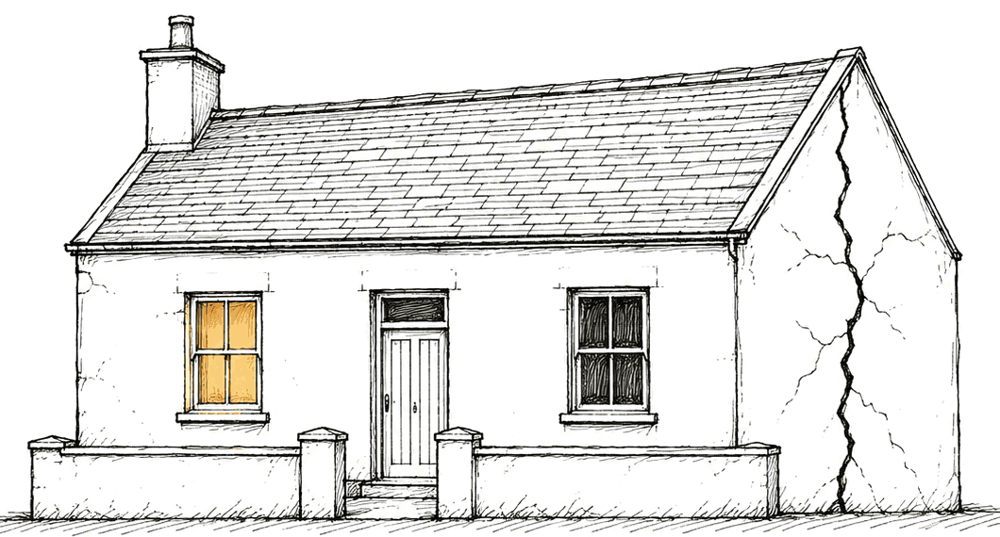
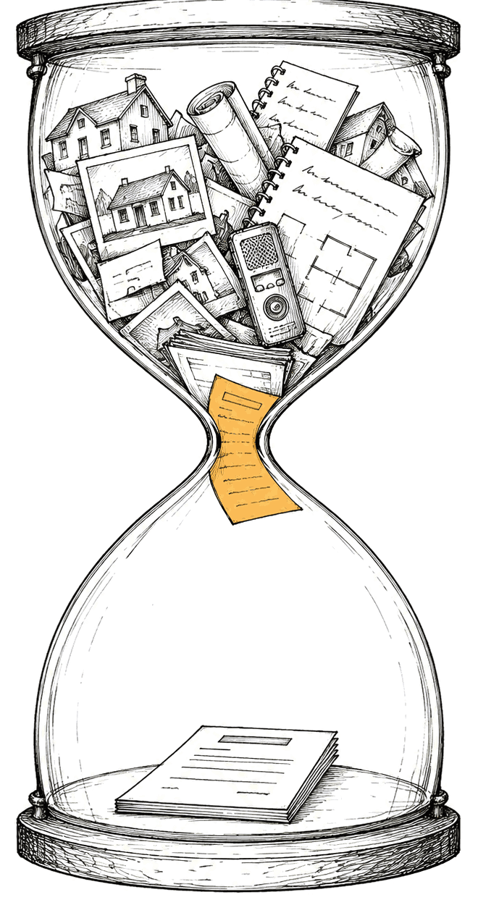
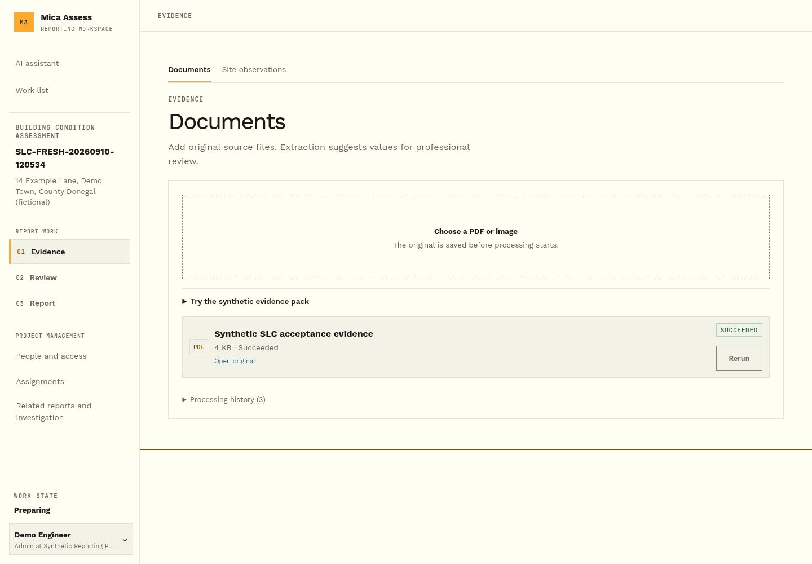
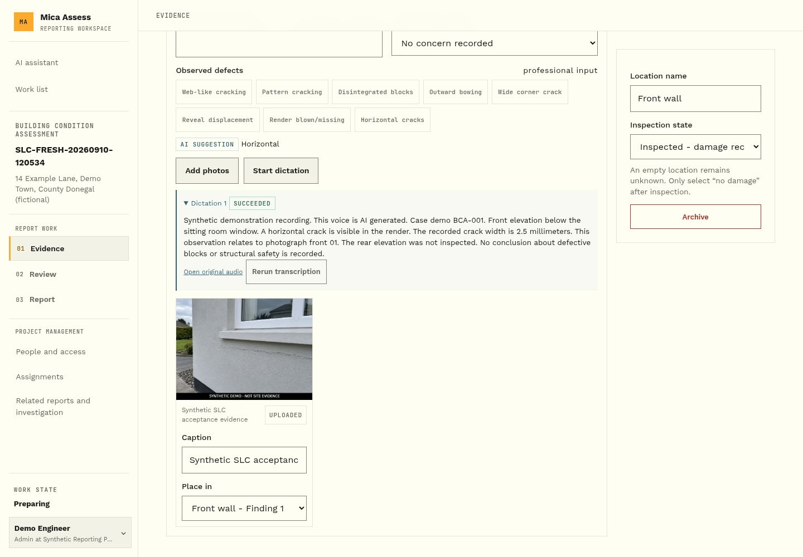
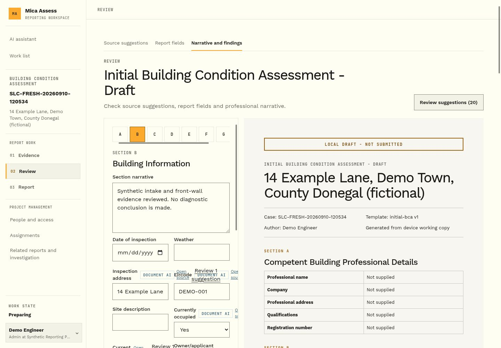
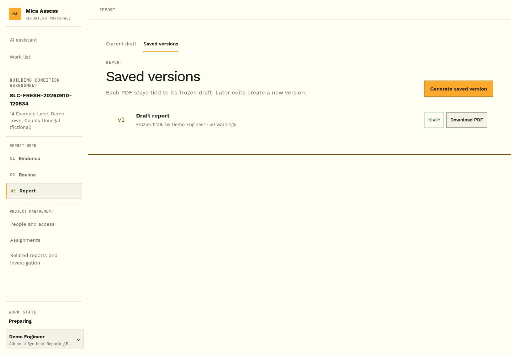

Releve
The Building Condition Assessment every application to the Defective Concrete Blocks Grant Scheme needs. The visit takes a morning; the write-up can take two weeks. Releve builds the draft on site from your photos, voice notes and the homeowner's paperwork.
CCMA to the Oireachtas, 2026 · Dept. of Housing, to June 2026

A registered engineer, architect or surveyor must inspect the house and sign a Building Condition Assessment before the homeowner can apply.

Research presented to TDs and senators in June 2026 suggests the 9,500 figure could rise this far.
RTÉ News, June 2026Phone photos, voice memos, handwritten notes, planning files and old reports, retyped at a desk days later.
Architecture practice preparing BCAs, Sept 2026In one council's audit, 11 of the 19 slowest applications were incomplete.
Donegal County Council audit, Sept 2025What software can't fix: lab testing capacity, funding and contractors. Releve focuses on the report every application needs.
Drag the pin through one visit.
Upload the planning file and old reports. Blank fields fill in, each showing the document it came from.




One illustrative visit, on a made-up house.Drag the pin, click a step, or use the arrow keys.
Paste documents into a chatbot and you still have to check every answer. Releve breaks each source into small facts, and every line of the report points to the fact it came from.
PrototypeThe AI here is a labelled stand-in; a live model is connected but not yet tested on real documents. Swap the model and the traceable structure stays.
Every assessment is already paid professional work. Releve sells time back to the practice that carries the write-up.
Uploads what is missing through a one-time link. No account.
A subscription per assessor, so a busy week costs nothing extra.
Gets the same PDF it gets today. No new portal to learn.
Pricing is a hypothesis. No practice has paid for Releve yet.
Evidence in, a source for every value, a professional signs, the version is frozen. A new report type is a new template, not a new product.
The Building Condition Assessment every grant needs.
Works plans, payment claims and completion packs, plus the new social homes scheme.
Condition surveys, snagging, installation, building control and fire safety.
Any evidence-heavy report, compliance included, where every fact has to be checkable.
Each new report type still needs testing with real users. Success in DCB doesn't prove demand elsewhere.
The next real test is one practice running one live case. Before any real case material, data-protection controls and a documented data-flow assessment come first.